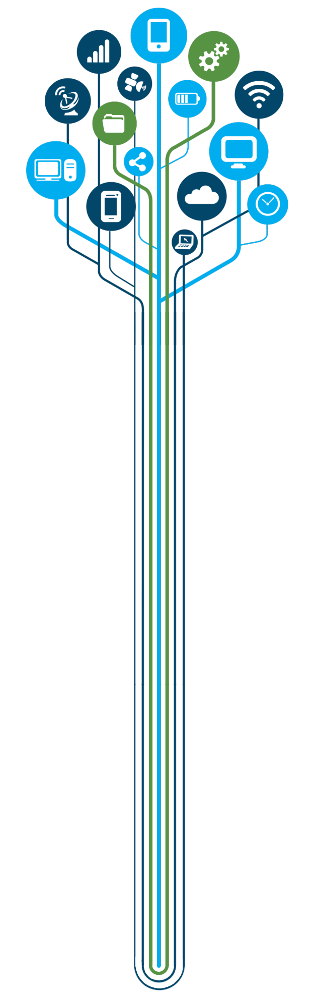

<!DOCTYPE html>
<html>
<head>
   <meta http-equiv="Content-Type" content="text/html; charset=utf-8">
   <link rel="stylesheet" type="text/css" href="style.css">
   <title>Кібербезпека</title>
   <link rel="shortcut icon" href="logotype.png" type="image/x-icon">
</head>
</html>
<link href="https://fonts.googleapis.com/css?family=Josefin+Sans" rel="stylesheet">
<!-- Background & animion & navbar & title -->
<div class="container-fluid">
   <!-- Background animtion-->
   <div class="background">
      <div class="cube"></div>
      <div class="cube"></div>
      <div class="cube"></div>
      <div class="cube"></div>
      <div class="cube"></div>
   </div>
   <!-- header -->
   <header>
      <!-- navbar -->
      <nav>
         <ul>
            <li><a href="main.html">Головна</a></li>
            <li><a href="info.html">Інформація</a></li>
            <li><a href="services.html">Сервіси</a></li>
            <li><a href="contacts.html">Контакти</a></li>
         </ul>
      </nav>
      <!-- logo -->
      <div class="logo"><span>Кібербезпека</span></div>
      <!-- title & content -->
      <section class="header-content">
         <h1>Ласкаво просимо у безпечний світ комп'ютерних технологій та інновацій!</h1>
         <p class="text_osnova1">Кібербезпека — захищеність життєво важливих інтересів людини і громадянина, суспільства та держави під час використання кіберпростору, за якої забезпечуються сталий розвиток інформаційного суспільства та цифрового комунікативного середовища, своєчасне виявлення, запобігання і нейтралізація реальних і потенційних загроз національній безпеці України у кіберпросторі».</p>
      </section>
      <p></p>
      <br/>
      <!-- Чекбоксы -->
         <input class="hide" id="hd-1" type="checkbox">
         <label for="hd-1">Натисніть, щоб побачити різницю між кібербезпекою та інформаційною безпекою</label>
         <div>
            <ul class="text_labelWthIndent">
               <li>Інформаційна безпека — це стан захищеності систем обробки і зберігання даних, при якому забезпечено конфіденційність, доступність і цілісність інформації.</li>
               </br>
               <li>Кібербезпека — це безпека ІТ систем (обладнання та програм). Кібербезпека є частиною інформаційної безпеки.</li>
               </br>
               <li>Раніше на всіх крупних підприємствах документація та креслення зберігалися в екземплярах на папері. Зараз вся інформація знаходиться на копьютерах чи в хмарних сховищах. І захист цього виду інформації називається кібербезпекою. А безпека всієї інформації взагалом називаеться інформаційною безпекою.</li>
            </ul>
         </div>
             <br/>
             <br/>

             <input class="hide" id="hd-2" type="checkbox">
             <label for="hd-2">Натисніть, щоб дізнатися про Кіберполіцію України</label>
             <div>
                <ul class="text_labelWthIndent">
                   <li >Кіберполіція (Департамент кіберполіції Національної поліції України) — міжрегіональний територіальний орган Національної поліції України, який входить до структури кримінальної поліції Національної поліції та відповідно до законодавства України забезпечує реалізацію державної політики у сфері боротьби з кіберзлочинністю, організовує та здійснює відповідно до законодавства оперативно-розшукову діяльність.</li>
                   </br>
                   <li >Спеціалізується на попередженні, виявленні, припиненні та розкритті кримінальних правопорушень, механізмів підготовки, вчинення або приховування яких передбачає використання електронно-обчислювальних машин (комп'ютерів), телекомунікаційних та комп'ютерних інтернет-мереж і систем.</li>
                   </br>
                </ul>
                <p class="text_labelWthIndent">Основні завдання Кіберполіції:</p>
                <ol class="text_label">
                   <li>Реалізація державної політики у сфері протидії кіберзлочинності.</li>
                   <li>Завчасне інформування населення про появу новітніх кіберзлочинів.</li>
                   <li>Впровадження програмних засобів для систематизації та аналізу інформації про кіберінциденти, кіберзагрози та кіберзлочини.</li>
                   <li>Реагування на запити закордонних партнерів, що надходитимуть каналами Національної цілодобової мережі контактних пунктів.</li>
                   <li>Участь у підвищенні кваліфікації працівників поліції щодо застосування комп'ютерних технологій у протидії злочинності.</li>
                   <li>Участь у міжнародних операціях та співпраця в режимі реального часу. Забезпечення діяльності мережі контактних пунктів між 90 країнами світу.</li>
                   <li>Протидія кіберзлочинам у сфері використання платіжних систем:</li>
                </ol>
                <ul class="text_label">
                   <li>скімінг (шимінг) — незаконне копіювання вмісту треків магнітної смуги (чипів) банківських карток;</li>
                   <li>кеш-трапінг — викрадення готівки з банкомату шляхом встановлення на шатер банкомату спеціальної утримуючої накладки;</li>
                   <li>кардінг — незаконні фінансові операції з використанням платіжної картки або її реквізитів, що не ініційовані або не підтверджені її держателем;</li>
                   <li>несанкціоноване списання коштів з банківських рахунків за допомогою систем дистанційного банківського обслуговування.</li>
                </ul>
             </div>
                 <br/>
                 <br/>

         <input class="hide" id="hd-3" type="checkbox">
         <label for="hd-3">Натисніть тут, щоб побачити, що таке фішинг</label>
         <div>
            <ul class="text_labelWthIndent">
               <li>Фішинг (англ. phishing від fishing — риболовля) — вид шахрайства, метою якого є виманювання в довірливих або неуважних користувачів мережі персональних даних клієнтів онлайнових аукціонів, сервісів із переказу або обміну валюти, інтернет-магазинів.</li>
            </br>
               <li>Вішинг (від англ. voice — «голос»; fishing — «рибалка») — телефонне шахрайство, пов'язане з виманюванням реквізитів банківських карток або іншої конфіденційної інформації, примушуваннями до переказу коштів на картку злодіїв.</li>
            </br>
               <li>Шахраї намагаються змусити користувачів самостійно розкрити конфіденційні дані.</li>
            </br>
               <li>Наприклад, надсилаючи електронні листи з пропозиціями підтвердити реєстрацію облікового запису, що містять посилання на сайт, зовнішній вигляд якого повністю копіює дизайн відомих ресурсів.</li>
            </ul>
         </div>
            </br>
            </br>

            <input class="hide" id="hd-4" type="checkbox">
            <label for="hd-4">Натисніть, щоб побачити про булінг та його види</label>
            <div>
               <p class="text_labelWthIndent">Кібербулінг (англ. Cyberbullying) — умисне цькування щодо визначеної особи у кіберпросторі, як правило, впродовж тривалого періоду часу. Особу, яка здійснює кібербулінг часто називають «булер», вона діє анонімно, таким чином щоб жертва не знала від кого походять агресивні дії.</p>
               </br>
               <ol class="text_labelWthIndent">
                  <li>Флеймінг – невеликі емоційні та жорстокі репліки, які агресор надсилає жертві переважно на «публіці»: на форумах або у чатах. Улюблений інструмент знущання так званих «тролів».</li>
               </br>
                  <li>Нападки – це регулярні образливі висловлювання провокатора, які виснажують жертву. Найчастіше можна спостерігати в ігровому товаристві – у чатах онлайн ігор.</li>
               </br>
                  <li>Наклеп – провокатор поширює неправдиву та принизливу інформацію про свою жертву.</li>
               </br>
                  <li>Самозванство – агресор використовує особисту інформацію іншої людини (паролі до облікових записів у соціальних мережах та блогах), щоб від її імені дошкуляти іншим користувачам.</li>
               </br>
                  <li>Ошуканство – крадіжка конфіденційних даних задля власних цілей або на замовлення третіх осіб.</li>
               </br>
                  <li>Відчуження – демонстративне ігнорування людини: видалення з чатів, груп, додавання до чорного списку друзів тощо.</li>
               </br>
                  <li>Кіберпереслідування – найнебезпечніший різновид інтернет-мобінгу. За допомогою інформації, яку жертва викладає у мережу, злодій переслідує її, щоб скоїти напад, побити або зґвалтувати.</li>
               </br>
                  <li>Хепіслепінг – фільмування реальних нападів або знущань для публікації в інтернеті. Внаслідок появи хепіслепінгу з’явилося інше поняття – буліцид, що означає загибель жертви внаслідок булінгу.</li>
               </br>
               </ol>
            </div>
               </br>
               </br>
   </header>